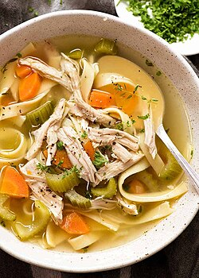

Home
Chicken Noodle Soup

Description
A hearty bowl of slow cooked tender chicken with egg noodles, celery,carrots and peas.
Ingredients
- 1lbs of chicken breast
- 750ml chicken stock
- 2 medium carrots
- 2-3 stalks of celery
- 1 cup frozen peas
- 2-3 cloves of garlic
- 2 medium bay leaves
- 2 teaspoons Thyme
- Salt and Pepper to taste
- 2 table spoons olive oil
- 1 cup of water
- 1 cup egg noodles
Steps
- Gather ingredients
- Put a medium stock pot on medium high heat with 2 tablespoons of olive olive to preheat while you are chopping
- Chop carrots, celery and garlic into bite sized chunks and set aside
- Slice chicken into bite sized pieces and place into pre heated pot with garlic
- Once chicken is brown, remove from the heat and set to the side
- Allow pot to heat back up a little and then add carrots and celery to the pot and sweat for 5 mins
- Once carrots and celery become slightly soft, add chicken back into the pot and stir for a few minutes to marry the flavors
- Now add in chicken stock and give the pot a good stir
- After contents of the pot start to simmer, add in previously heated carrots and celery along with Bay leaves and Thyme.
- Add noodles and 1 cup of water
- Allow to simmer for at least an hour or all day in your favorite slow cooker!